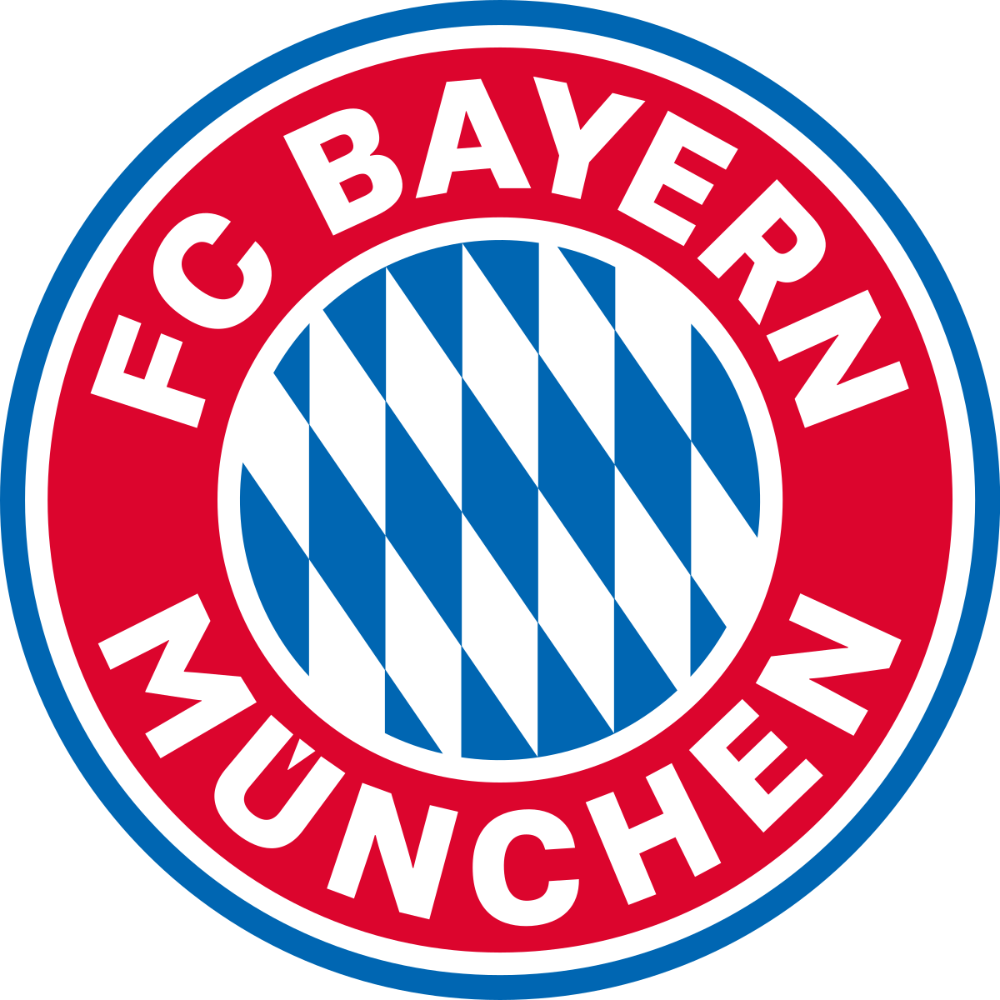

<div>
  <nav class="navbar navbar-expand-lg navbar-dark bg-dark">
    <a class="navbar-brand" href="#">
      
    </a>
    <button class="navbar-toggler" type="button" data-toggle="collapse" data-target="#navbarSupportedContent" aria-controls="navbarSupportedContent" aria-expanded="false" aria-label="Toggle navigation">
      <span class="navbar-toggler-icon"></span>
    </button>

    <div class="collapse navbar-collapse" id="navbarSupportedContent">
      <ul class="navbar-nav mr-auto">

        <li class="nav-item" routerLinkActive="active">
          <a class="nav-link" [routerLink]="['home']">Inicio</a>
        </li>
        <li class="nav-item dropdown">
          <a class="nav-link dropdown-toggle" href="#" id="navbarDropdown" role="button" data-toggle="dropdown" aria-haspopup="true" aria-expanded="false">
            Ligas
          </a>
          <div class="dropdown-menu" aria-labelledby="navbarDropdown">
            <a class="dropdown-item" [routerLink]="['/seccion/Liga']">La Liga España</a>
            <a class="dropdown-item" [routerLink]="['/seccion/Premier']">Premier League</a>
            <a class="dropdown-item" [routerLink]="['/seccion/Ligue1']">Ligue 1</a>
            <a class="dropdown-item" [routerLink]="['/seccion/Bundesliga']">Bundesliga</a>
            <a class="dropdown-item" [routerLink]="['/seccion/SerieA']">Serie A</a>
          </div>
        </li>

        <li class="nav-item dropdown">
          <a class="nav-link dropdown-toggle" href="#" id="navbarDropdown" role="button" data-toggle="dropdown" aria-haspopup="true" aria-expanded="false">
            Copas
          </a>
          <div class="dropdown-menu" aria-labelledby="navbarDropdown">
            <a class="dropdown-item" [routerLink]="['/seccion/Liber']">Copa Libertadores</a>
            <a class="dropdown-item" [routerLink]="['/seccion/Suda']">Copa Sudamericana</a>
            <div class="dropdown-divider"></div>
            <a class="dropdown-item" [routerLink]="['/seccion/Champions']">Champions League</a>
            <a class="dropdown-item" [routerLink]="['/seccion/Europa']">Europa League</a>
          </div>
        </li>

        <li [innerHTML]="session" (click)="getRoute($event)" class="nav-item" routerLinkActive="active">

        </li>

        <li [innerHTML]="cerrar" (click)="getRoute($event)" class="nav-item" routerLinkActive="active">

        </li>

        <li [innerHTML]="admin" (click)="getRoute($event)" class="nav-item" routerLinkActive="active">

        </li>


      </ul>


      <form class="form-inline my-2 my-lg-0">
        <input style="margin-left: 10px;" id="buscar" class="form-control mr-sm-2" type="search" placeholder="Buscar" aria-label="Buscar">
        <button 
        (click)="buscar()"
        class="btn btn-outline-danger my-2 my-sm-0"
        type="submit">Buscar</button>
      </form>


    </div>
  </nav>

  <ul style="background-color: slategrey; padding-bottom: 10px;" class="nav justify-content-center">
    <li class="nav-item">
      <a [routerLink]="['/seccion/Boca']"></a>
    </li>
    <li class="nav-item">
      <a [routerLink]="['/seccion/Real']"></a>
    </li>
    <li class="nav-item">
      <a [routerLink]="['/seccion/Inter']"></a>
    </li>
    <li class="nav-item">
      <a [routerLink]="['/seccion/United']"></a>
    </li>
    <li class="nav-item">
      <a [routerLink]="['/seccion/PSG']"></a>
    </li>
    <li class="nav-item">
      <a [routerLink]="['/seccion/Bayern']"></a>
    </li>
    <li class="nav-item">
      <a [routerLink]="['/seccion/Liverpool']"></a>
    </li>
    <li class="nav-item">
      <a [routerLink]="['/seccion/Milan']"></a>
    </li>
    <li class="nav-item">
      <a [routerLink]="['/seccion/Barcelona']"></a>
    </li>
    <li class="nav-item">
      <a [routerLink]="['/seccion/River']"></a>
    </li>
  </ul>

  <hr>
</div>